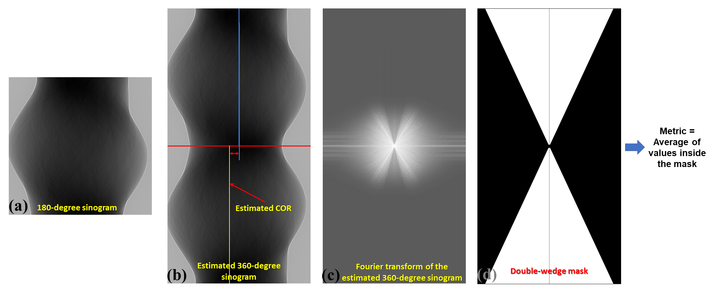

4.5. Complete workflow for processing tomographic data¶
This guide presents a comprehensive workflow for processing tomographic data, starting from raw data. In addition,
it includes useful tips and explanations to users’ common mistakes.
Raw data acquired by a detector which are: projection images, flat-field image, and dark-field images.
Metadata that provides information about the experimental setup, such as rotation angles, energy, pixel size,
sample-detector distance, and any other relevant parameters.
Visual inspection (using ImageJ) can help determine whether raw data are of sufficient quality. Users may want to
perform the following checks:
Verify that the first and the last projection are 180-degree apart:
If raw data are in hdf/h5/nxs format, the projections can be extracted and saved as
tif images as the following:
importnumpyasnpimportalgotom.io.loadersaveraslosafile_path="E:/Tomo_data/scan_68067.hdf"output_base="E:/tmp/extract_tifs/"proj_path="entry/projections"# Refer section 1.2.1 to know how to get# path to a dataset in a hdf file.flat_path="entry/flats"flat_img=np.mean(np.asarray(losa.load_hdf(file_path,flat_path)),axis=0)nmean=np.mean(flat_img)flat_img[flat_img==0.0]=nmean# To avoid zero divisionproj_obj=losa.load_hdf(file_path,proj_path)# hdf objectproj_0=proj_obj[0,:,:]/flat_imglosa.save_image(output_base+"/proj_0.tif",proj_0)proj_180=proj_obj[-1,:,:]/flat_imglosa.save_image(output_base+"/proj_180.tif",proj_180)
If the first and last projection are 180-degree apart, the second image should be a mirror
reflection (left-right flip) of the first image.
If data were acquired using a 360-degree scan with an offset rotation axis,
it is important to verify that the rotation axis is positioned to one side of the field of view (FOV). This can be done
by checking for an overlap between the 0-degree projection and the left-right flipped 180-degree projection image.
Check if the rotation axis is tilted. This can be done by calculating the difference/average between the
0-degree projection and the 180-degree projection, then examining the resulting image for a symmetric line.
If the x-location of the symmetric line is the same at the top and bottom of the image, the rotation axis
is properly aligned.
If a tilt is detected, the tilt angle can be accurately calculated by locating the center of rotation
using sinograms generated at the top, middle, and bottom of the FOV; then applying a linear fit to the results.
The resulting tilt angle can be used to correct the tilted tomographic images, as shown
here.
Ensure that projection images were acquired at evenly spaced angles and there was no stage jittering during
the scan by inspecting a sinogram image:
If raw data are in hdf/h5/nxs format, the sinogram can be extracted and saved as tif format as follows:
importnumpyasnpimportalgotom.io.loadersaveraslosafile_path="E:/Tomo_data/scan_68067.hdf"output_base="E:/tmp/extract_tifs/"proj_path="entry/projections"# Refer section 1.2.1 to know how to get# path to a dataset in a hdf file.flat_path="entry/flats"flat_img=np.mean(np.asarray(losa.load_hdf(file_path,flat_path)),axis=0)nmean=np.mean(flat_img)flat_img[flat_img==0.0]=nmean# To avoid zero divisionproj_obj=losa.load_hdf(file_path,proj_path)# hdf object(depth,height,width)=proj_obj.shapesino_idx=height//2sinogram=proj_obj[:,sino_idx,:]/flat_img[sino_idx]losa.save_image(output_base+"/sinogram.tif",sinogram)
If input data are in tif format, we need to convert them to the hdf format for fast extracting
sinogram image:
importosimportshutilimportnumpyasnpimportalgotom.io.converterascvrimportalgotom.io.loadersaveraslosaproj_path="E:/Tomo_data/scan_68067/projections/"flat_path="E:/Tomo_data/scan_68067/flats/"output_base="E:/tmp/extract_tifs/"flat_img=np.mean(np.asarray([losa.load_image(file)forfileinlosa.find_file(flat_path+"/*tif*")]),axis=0)nmean=np.mean(flat_img)flat_img[flat_img==0.0]=nmean# To avoid zero division# Convert data to hdf format for fast extracting sinograms.hdf_file_path=output_base+"/hdf_converted/"+"tomo_data.hdf"key_path="entry/data"cvr.convert_tif_to_hdf(proj_path,hdf_file_path,key_path=key_path)proj_obj,hdf_obj=losa.load_hdf(hdf_file_path,key_path,return_file_obj=True)(depth,height,width)=proj_obj.shapesino_idx=height//2sinogram=proj_obj[:,sino_idx,:]/flat_img[sino_idx]losa.save_image(output_base+"/sinogram.tif",sinogram)hdf_obj.close()# Remove the hdf file if needs toifos.path.isdir(output_base+"/hdf_converted/"):shutil.rmtree(output_base+"/hdf_converted/")
In high throughput tomographic systems, it’s common that users want to quickly reconstruct only
a few slices in order to verify the quality of the data or to locate the region of interest for
higher resolution scans. This can be achieved by following these steps:
Load the raw data and the corresponding flat-field and dark-field images. It’s common to acquire
multiple flat and dark images (usually between 10 and 50) and average them to improve the
signal-to-noise (SNR) ratio. Once the flat and dark images have been averaged, they can be used for
flat-field correction.
If raw data are in tif format, we need to convert them to hdf format first:
importnumpyasnpimportalgotom.io.loadersaveraslosaimportalgotom.io.converterascvrimportalgotom.prep.correctionascorrimportalgotom.prep.calculationascalcimportalgotom.prep.removalasremoimportalgotom.prep.filteringasfiltimportalgotom.rec.reconstructionasrecproj_path="E:/Tomo_data/scan_68067_tif/projections/"flat_path="E:/Tomo_data/scan_68067_tif/flats/"dark_path="E:/Tomo_data/scan_68067_tif/darks/"output_base="E:/output/rec_few_slices/"# Load dark-field images and flat-field images.flats=losa.get_tif_stack(flat_path)darks=losa.get_tif_stack(dark_path)# Convert tif images to hdf format for fast extracting sinograms.file_path=output_base+"/tmp_/"+"tomo_data.hdf"key_path="entry/projections"cvr.convert_tif_to_hdf(proj_path,file_path,key_path=key_path,option={"entry/flats":flats,"entry/darks":darks})
Working with a hdf file is straightforward as follows:
importnumpyasnpimportalgotom.io.loadersaveraslosaimportalgotom.io.converterascvrimportalgotom.prep.correctionascorrimportalgotom.prep.calculationascalcimportalgotom.prep.removalasremoimportalgotom.prep.filteringasfiltimportalgotom.rec.reconstructionasrecfile_path="E:/Tomo_data/scan_68067.hdf"output_base="E:/output/rec_few_slices/"proj_path="entry/projections"# Refer section 1.2.1 to know how to get# path to a dataset in a hdf file.flat_path="entry/flats"dark_path="entry/darks"# Load data, average flat and dark imagesproj_obj=losa.load_hdf(file_path,proj_path)# hdf object(depth,height,width)=proj_obj.shapeflat_field=np.mean(np.asarray(losa.load_hdf(file_path,flat_path)),axis=0)dark_field=np.mean(np.asarray(losa.load_hdf(file_path,dark_path)),axis=0)# If the rotation angles are not provided, e.g. from metadata of the HDF file,# they can be generated automatically in a reconstruction method. Note that# the rotation angles are in radians as requested by the reconstruction method.# To rotate the reconstructed image, simply add an offset angle using the following method:offset_angle=0.0# Degreeangles=np.deg2rad(offset_angle+np.linspace(0.0,180.0,depth))# Specify the range of slices to be reconstructedstart_slice=100stop_slice=height-100step_slice=100# Extract sinogram at the middle for calculating the center of rotationidx=height//2sinogram=corr.flat_field_correction(proj_obj[:,idx,:],flat_field[idx],dark_field[idx])center=calc.find_center_vo(sinogram)print("Center of rotation: {}".format(center))# Extract sinograms and perform flat-field correctionforidxinrange(start_slice,stop_slice+1,step_slice):sinogram=corr.flat_field_correction(proj_obj[:,idx,:],flat_field[idx],dark_field[idx])# Apply pre-processing methods
Apply pre-processing methods: zinger removal, ring artifact removal, and/or denoising to sinograms.
Note that there are many choices for ring-removal methods, but for this step we may just want a
fast method.
Perform reconstruction and save the results to tif. Algotom provides reconstruction methods
that can run on either CPU or GPU. It also provides the wrappers of the gridrec method, available
in Tomopy, which is very fast for CPU-only computers; and iterative methods available in Astra
Toolbox. Note that if users want to use these additional wrappers, Tomopy and Astra will need to
be installed along with Algotom.
# ...# Perform reconstruction# Using a cpu methodrec_img=rec.dfi_reconstruction(sinogram,center,angles=angles,apply_log=True)# # Other options:# # Using a gpu method# rec_img = rec.fbp_reconstruction(sinogram, center, angles=angles,# apply_log=True, gpu=True)# # Using a cpu method, available in Tomopy# rec_img = rec.gridrec_reconstruction(sinogram, center, angles=angles,# apply_log=True)# # Using a gpu method, available in Astra Toolbox# rec_img = rec.astra_reconstruction(sinogram, center, angles=angles,# method="SIRT_CUDA", num_iter=150,# apply_log=True)out_file=output_base+"/rec_"+("00000"+str(idx))[-5:]+".tif"losa.save_image(out_file,rec_img)
Algotom offers several methods for automatically calculating the center of rotation (COR),
which refers to the rotation axis of the sample stage with respect to the FOV. These methods
work on different processing spaces (Fig. 4.5.1) and can be selected according to specific
types of input images.
Fig. 4.5.1 Different processing spaces can be used for finding the center of rotation.¶
Methods that work in the projection space
are the fastest and simplest, but they are also the least reliable.
importtimeitimportalgotom.prep.calculationascalc# Data is at: https://doi.org/10.5281/zenodo.1443567# Steps for loading data are similar to above sectionsproj_0=proj_obj[0,:,:]/flat_fieldproj_180=proj_obj[-1,:,:]/flat_fieldprint("Image size: {}".format(flat_field.shape))t0=timeit.default_timer()center=calc.find_center_based_phase_correlation(proj_0,proj_180)t1=timeit.default_timer()print("Using phase correlation. Center: {0}. Time: {1}".format(center,t1-t0))t0=timeit.default_timer()center=calc.find_center_projection(proj_0,proj_180,chunk_height=100)t1=timeit.default_timer()print("Using image correlation. Center: {0}. Time: {1}".format(center,t1-t0))
The most reliable method for automatically calculating the center of rotation is a method
that works on a 180-degree sinogram image, as proposed in [R21]. This method has been
extensively tested on 2,000 micro-tomography datasets,
achieving a success rate of 98%. A visual explanation of how the method works is provided in Fig. 4.5.2.

Fig. 4.5.2 Explanation of how the autocentering method in the sinogram space works.¶
idx=height//2sinogram=corr.flat_field_correction(proj_obj[:,idx,:],flat_field[idx],dark_field[idx])t0=timeit.default_timer()radius=width//16mid=width//2# Enable parallel computing using the "ncore" option.center=calc.find_center_vo(sinogram,start=mid-radius,stop=mid+radius,ncore=8)t1=timeit.default_timer()print("Using sinogram metric. Center: {0}. Time: {1}".format(center,t1-t0))
The method’s default parameters work for most X-ray microtomography datasets, as extensively tested. However,
users can adjust these parameters, such as the ratio and ver_drop parameters, to suit their data. A unique
feature of this method is the ability to average multiple sinograms to improve the signal-to-noise ratio and use
the result as input for the method. Note that strongly smoothed or blurry sinograms resulting from denoising methods
or phase-retrieval methods can impact the performance of this method.
Another method, available from Algotom 1.3, works in the reconstruction space
and evaluates a slice metric to determine the best center of rotation. This method is slower than the other methods
and is most suitable for performing small, fine searching ranges around the coarse center found by previous methods.
It may not be suitable for use on low SNR data.
If the automated methods fail to find the center of rotation, users can rely on the following manual methods
(available from Algotom 1.3) to locate it:
The first manual method
involves generating a list of 360-degree sinograms created from the input 180-degree sinogram using a list
of estimated CORs. Users can find the best COR by identifying the generated sinogram that has a continuous
transition between the two halves of the sinogram, as illustrated in the figure below.
The second manual method involves reconstructing a list of slices using a list of estimated CORs. Users
can find the best COR by visually inspecting the reconstructed slices and selecting the one with the least
streak artifacts.
4.5.4. Tweaking parameters of preprocessing methods¶
When reconstructing synchrotron-based X-ray microtomography data, users often spend most of time tweaking
parameters of preprocessing methods such as ring artifact removal or contrast-enhancement methods.
We can setup different workflows to test methods as below:
To compare different ring removal methods; note that in Algotom, some well-known methods are improved
and have additional options for customization:
# Steps for loading data are similar to above sections# To create new output-folder for each time of running the script.output_base0="E:/tmp/compare_ring_removal_methods/"folder_name=losa.make_folder_name(output_base0,name_prefix="Ring_removal",zero_prefix=3)output_base=output_base0+"/"+folder_name+"/"idx=height//2sinogram=corr.flat_field_correction(proj_obj[:,idx,:],flat_field[idx],dark_field[idx])center=calc.find_center_vo(sinogram)# Using the combination of algorithmssinogram1=remo.remove_all_stripe(sinogram,snr=3.0,la_size=51,sm_size=21)rec_img=rec.fbp_reconstruction(sinogram1,center)losa.save_image(output_base+"/remove_all_stripe.tif",rec_img)# Using the sorting-based methodsinogram2=remo.remove_stripe_based_sorting(sinogram,size=21,dim=1)rec_img=rec.fbp_reconstruction(sinogram2,center)losa.save_image(output_base+"/remove_stripe_based_sorting.tif",rec_img)# Using the fitting-based methodsinogram3=remo.remove_stripe_based_fitting(sinogram,order=2,sigma=10)rec_img=rec.fbp_reconstruction(sinogram3,center)losa.save_image(output_base+"/remove_stripe_based_fitting.tif",rec_img)# Using the filtering-based methodsinogram4=remo.remove_stripe_based_filtering(sinogram,sigma=3,size=21,dim=1,sort=True)rec_img=rec.fbp_reconstruction(sinogram4,center)losa.save_image(output_base+"/remove_stripe_based_filtering.tif",rec_img)# Using the 2d filtering and sorting-based methodsinogram5=remo.remove_stripe_based_2d_filtering_sorting(sinogram,sigma=3,size=21,dim=1)rec_img=rec.fbp_reconstruction(sinogram5,center)losa.save_image(output_base+"/remove_stripe_based_2d_filtering_sorting.tif",rec_img)# Using the interpolation-based methodsinogram6=remo.remove_stripe_based_interpolation(sinogram,snr=3.0,size=51)rec_img=rec.fbp_reconstruction(sinogram6,center)losa.save_image(output_base+"/remove_stripe_based_interpolation.tif",rec_img)# Using the normalization-based methodsinogram7=remo.remove_stripe_based_normalization(sinogram,sigma=15)rec_img=rec.fbp_reconstruction(sinogram7,center)losa.save_image(output_base+"/remove_stripe_based_normalization.tif",rec_img)# Using the regularization-based methodsinogram8=remo.remove_stripe_based_regularization(sinogram,alpha=0.0005,num_chunk=1,apply_log=True,sort=False)rec_img=rec.fbp_reconstruction(sinogram8,center)losa.save_image(output_base+"/remove_stripe_based_regularization.tif",rec_img)# Using the fft-based methodsinogram9=remo.remove_stripe_based_fft(sinogram,u=20,n=8,v=1,sort=False)rec_img=rec.fbp_reconstruction(sinogram9,center)losa.save_image(output_base+"/remove_stripe_based_fft.tif",rec_img)# Using the wavelet-fft-based methodsinogram10=remo.remove_stripe_based_wavelet_fft(sinogram,level=5,size=1,wavelet_name='db9',window_name='gaussian',sort=False)rec_img=rec.fbp_reconstruction(sinogram10,center)losa.save_image(output_base+"/remove_stripe_based_wavelet_fft.tif",rec_img)
To perform scanning a parameter of a ring removal method
# To create new output-folder for each time of running the script.output_base0="E:/tmp/scan_parameters/"folder_name=losa.make_folder_name(output_base0,name_prefix="Scan_ratio",zero_prefix=3)output_base=output_base0+"/"+folder_name+"/"forvalueinnp.linspace(1.1,3.0,20):sinogram1=remo.remove_all_stripe(sinogram,snr=value,la_size=51,sm_size=21)name="snr_{0:2.2f}".format(value)rec_img=rec.fbp_reconstruction(sinogram1,center)losa.save_image(output_base+"/scan_value_"+name+".tif",rec_img)
The quality of reconstructed data in synchrotron-based X-ray microtomography depends heavily on the
preprocessing methods applied. If the number of acquired projections is standard and the data are properly cleaned,
the choice of reconstruction method will have less impact on the quality of the final results. Therefore, users can
choose a reconstruction method based on the availability of computing resources.
output_base="E:/tmp/compare_reconstruction_methods/"# Using the direct Fourier inversion method (CPU)t0=timeit.default_timer()rec_img=rec.dfi_reconstruction(sinogram,center)print("Reconstructed image size: {}".format(rec_img.shape))losa.save_image(output_base+"/DFI_method_cpu.tif",rec_img)t1=timeit.default_timer()print("Using the DFI method (CPU). Time: {}".format(t1-t0))# Using the filtered back-projection method (CPU)t0=timeit.default_timer()rec_img=rec.fbp_reconstruction(sinogram,center,gpu=False)losa.save_image(output_base+"/FBP_method_cpu.tif",rec_img)t1=timeit.default_timer()print("Using the FBP method (CPU). Time: {}".format(t1-t0))# Using the filtered back-projection method (GPU)t0=timeit.default_timer()rec_img=rec.fbp_reconstruction(sinogram,center,gpu=True)losa.save_image(output_base+"/FBP_method_gpu.tif",rec_img)t1=timeit.default_timer()print("Using the FBP method (GPU). Time: {}".format(t1-t0))# Using the gridrec method (CPU)t0=timeit.default_timer()rec_img=rec.gridrec_reconstruction(sinogram,center,ncore=1)losa.save_image(output_base+"/gridrec_method_cpu.tif",rec_img)t1=timeit.default_timer()print("Using the gridrec method (CPU). Time: {}".format(t1-t0))
>>>Reconstructed image size: (2560, 2560)Using the DFI method (CPU). Time: 12.7383788Using the FBP method (CPU). Time: 5.827241100000002Using the FBP method (GPU). Time: 3.001648600000003Using the gridrec method (CPU). Time: 1.7366413999999963
When dealing with undersampled sinogram, iterative reconstruction methods like SIRT (Simultaneous iterative reconstruction technique)
can be advantageous over Fourier-based methods. However, iterative methods are computationally
expensive. A workaround is to improve the Fourier-based methods by applying denoising and
upsampling methods (Algotom >=1.3)
to the sinogram.
output_base="E:/tmp/improve_fft_method/"print("Sinogram size {}".format(sinogram.shape))# Using FBP methodrec_img1=rec.fbp_reconstruction(sinogram,center,filter_name="hann")losa.save_image(output_base+"/fbp_recon.tif",rec_img1)# Using SIRT method with 150 number of iterationsrec_img2=rec.astra_reconstruction(sinogram,center,method="SIRT_CUDA",num_iter=150)losa.save_image(output_base+"/sirt_recon.tif",rec_img2)# Denosing + upsampling sinogram + FBP reconstructionsinogram=filt.fresnel_filter(sinogram,100)sinogram=corr.upsample_sinogram(sinogram,2,center)print("Upsampled sinogram size {}".format(sinogram.shape))rec_img3=rec.fbp_reconstruction(sinogram,center,filter_name="hann")losa.save_image(output_base+"/fbp_denoising_upsampling.tif",rec_img3)
After completing all the steps for selecting parameters and testing methods, we can proceed with the
full reconstruction process. The main difference compared to the previous steps is that
sinograms are processed in chunks, which reduces I/O overhead and utilizes parallel processing.
The following codes are available here
for both tif and hdf input formats, but we can break down the workflow and provide detailed explanations:
Import the necessary modules from Algotom, specify the input and output paths, and add
options to make it easier to modify the workflow later on.
importnumpyasnpimporttimeitimportalgotom.io.loadersaveraslosaimportalgotom.prep.correctionascorrimportalgotom.prep.calculationascalcimportalgotom.rec.reconstructionasrecimportalgotom.prep.removalasremoimportalgotom.prep.filteringasfiltimportalgotom.util.utilityasutil# Input filefile_path="E:/Tomo_data/scan_68067.hdf"# Specify output path, create new folder each time of running to avoid overwriting data.output_base0="E:/full_reconstruction/"folder_name=losa.make_folder_name(output_base0,name_prefix="recon",zero_prefix=3)output_base=output_base0+"/"+folder_name+"/"# Optional parametersstart_slice=10stop_slice=-1chunk=100# Number of slices to be reconstructed in one go. Adjust to suit RAM or GPU memory.ncore=16# Number of cpu-core for parallel processing. Set to None for autoselecting.output_format="tif"# "tif" or "hdf".preprocessing=True# Clean data before reconstruction.# Give alias to a reconstruction method which is convenient for later change# recon_method = rec.dfi_reconstruction# recon_method = rec.fbp_reconstructionrecon_method=rec.gridrec_reconstruction# Fast cpu-method. Must install Tomopy.# recon_method = rec.astra_reconstruction # To use iterative methods. Must install Astra.# Provide metadata for loading hdf file, get data shape and rotation angles.proj_path="/entry/projections"flat_path="/entry/flats"dark_path="/entry/darks"angle_path="/entry/rotation_angle"
Load dark-field images, flat-field images, rotation angles; and calculate the center of rotation.
t_start=timeit.default_timer()print("---------------------------------------------------------------")print("-----------------------------Start-----------------------------\n")print("1 -> Load dark-field and flat-field images, average each result")# Load data, average flat and dark images, get data shape and rotation angles.proj_obj=losa.load_hdf(file_path,proj_path)# hdf object(depth,height,width)=proj_obj.shapeflat_field=np.mean(np.asarray(losa.load_hdf(file_path,flat_path)),axis=0)dark_field=np.mean(np.asarray(losa.load_hdf(file_path,dark_path)),axis=0)angles=np.deg2rad(np.squeeze(np.asarray(losa.load_hdf(file_path,angle_path))))(depth,height,width)=proj_obj.shapeprint("2 -> Calculate the center-of-rotation")# Extract sinogram at the middle for calculating the center of rotationindex=height//2sinogram=corr.flat_field_correction(proj_obj[:,index,:],flat_field[index,:],dark_field[index,:])center=calc.find_center_vo(sinogram)print("Center-of-rotation is {}".format(center))
Loop through the sinograms chunk-by-chunk, apply the selected pre-processing methods in parallel,
and perform the reconstruction.
if(stop_slice==-1)or(stop_slice>height):stop_slice=heighttotal_slice=stop_slice-start_sliceifoutput_format=="hdf":# Note about the change of data-shaperecon_hdf=losa.open_hdf_stream(output_base+"/recon_data.hdf",(total_slice,width,width),key_path='entry/data',data_type='float32',overwrite=True)t_load=0.0t_prep=0.0t_rec=0.0t_save=0.0chunk=np.clip(chunk,1,total_slice)last_chunk=total_slice-chunk*(total_slice//chunk)# Perform full reconstructionforiinnp.arange(start_slice,start_slice+total_slice-last_chunk,chunk):start_sino=istop_sino=start_sino+chunk# Load data, perform flat-field correctiont0=timeit.default_timer()sinograms=corr.flat_field_correction(proj_obj[:,start_sino:stop_sino,:],flat_field[start_sino:stop_sino,:],dark_field[start_sino:stop_sino,:])t1=timeit.default_timer()t_load=t_load+t1-t0# Perform pre-processingifpreprocessing:t0=timeit.default_timer()sinograms=util.apply_method_to_multiple_sinograms(sinograms,"remove_zinger",[0.08,1],ncore=ncore,prefer="threads")sinograms=util.apply_method_to_multiple_sinograms(sinograms,"remove_all_stripe",[3.0,51,21],ncore=ncore,prefer="threads")sinograms=util.apply_method_to_multiple_sinograms(sinograms,"fresnel_filter",[200,1],ncore=ncore,prefer="threads")t1=timeit.default_timer()t_prep=t_prep+t1-t0# Perform reconstructiont0=timeit.default_timer()recon_imgs=recon_method(sinograms,center,angles=angles,ncore=ncore)t1=timeit.default_timer()t_rec=t_rec+t1-t0# Save outputt0=timeit.default_timer()ifoutput_format=="hdf":recon_hdf[start_sino-start_slice:stop_sino-start_slice]=np.moveaxis(recon_imgs,1,0)else:forjinrange(start_sino,stop_sino):out_file=output_base+"/rec_"+("0000"+str(j))[-5:]+".tif"losa.save_image(out_file,recon_imgs[:,j-start_sino,:])t1=timeit.default_timer()t_save=t_save+t1-t0t_stop=timeit.default_timer()print("Done slice: {0} - {1} . Time {2}".format(start_sino,stop_sino,t_stop-t_start))iflast_chunk!=0:start_sino=start_slice+total_slice-last_chunkstop_sino=start_sino+last_chunk# Load data, perform flat-field correctiont0=timeit.default_timer()sinograms=corr.flat_field_correction(proj_obj[:,start_sino:stop_sino,:],flat_field[start_sino:stop_sino,:],dark_field[start_sino:stop_sino,:])t1=timeit.default_timer()t_load=t_load+t1-t0# Perform pre-processingifpreprocessing:t0=timeit.default_timer()sinograms=util.apply_method_to_multiple_sinograms(sinograms,"remove_zinger",[0.08,1],ncore=ncore,prefer="threads")sinograms=util.apply_method_to_multiple_sinograms(sinograms,"remove_all_stripe",[3.0,51,21],ncore=ncore,prefer="threads")sinograms=util.apply_method_to_multiple_sinograms(sinograms,"fresnel_filter",[200,1],ncore=ncore)t1=timeit.default_timer()t_prep=t_prep+t1-t0# Perform reconstructiont0=timeit.default_timer()recon_imgs=recon_method(sinograms,center,angles=angles,ncore=ncore)t1=timeit.default_timer()t_rec=t_rec+t1-t0# Save outputt0=timeit.default_timer()ifoutput_format=="hdf":recon_hdf[start_sino-start_slice:stop_sino-start_slice]=np.moveaxis(recon_imgs,1,0)else:forjinrange(start_sino,stop_sino):out_file=output_base+"/rec_"+("0000"+str(j))[-5:]+".tif"losa.save_image(out_file,recon_imgs[:,j-start_sino,:])t1=timeit.default_timer()t_save=t_save+t1-t0t_stop=timeit.default_timer()print("Done slice: {0} - {1} . Time {2}".format(start_sino,stop_sino,t_stop-t_start))print("---------------------------------------------------------------")print("-----------------------------Done-----------------------------")print("Loading data cost: {0:0.2f}s".format(t_load))print("Preprocessing cost: {0:0.2f}s".format(t_prep))print("Reconstruction cost: {0:0.2f}s".format(t_rec))print("Saving output cost: {0:0.2f}s".format(t_save))print("Total time cost : {0:0.2f}s".format(t_stop-t_start))
>>>--------------------------------------------------------------------------------------------Start-----------------------------1 -> Load dark-field and flat-field images, average each result2 -> Calculate the center-of-rotationCenter-of-rotation is 1272.75Done slice: 10 - 110 . Time 189.6021034Done slice: 110 - 210 . Time 366.9538149Done slice: 210 - 310 . Time 579.1721645Done slice: 310 - 410 . Time 783.6394176Done slice: 410 - 510 . Time 1001.0833168Done slice: 510 - 610 . Time 1206.3565348Done slice: 610 - 710 . Time 1415.9822423Done slice: 710 - 810 . Time 1630.9875868Done slice: 810 - 910 . Time 1844.1762275Done slice: 910 - 1010 . Time 2052.5243417Done slice: 1010 - 1110 . Time 2266.1704849000002Done slice: 1110 - 1210 . Time 2485.4279775Done slice: 1210 - 1310 . Time 2695.1756578000004Done slice: 1310 - 1410 . Time 2902.663489Done slice: 1410 - 1510 . Time 3122.5606983000002Done slice: 1510 - 1610 . Time 3333.1580989000004Done slice: 1610 - 1710 . Time 3545.0758953000004Done slice: 1710 - 1810 . Time 3758.1900975000003Done slice: 1810 - 1910 . Time 3974.6899012000003Done slice: 1910 - 2010 . Time 4181.2648382Done slice: 2010 - 2110 . Time 4389.6914713999995Done slice: 2110 - 2160 . Time 4511.7352912--------------------------------------------------------------------------------------------Done-----------------------------Loading data cost: 675.88sPreprocessing cost: 3213.10sReconstruction cost: 337.11sSaving output cost: 276.67sTotal time cost : 4511.74s
As shown in the time cost list above, the most time-consuming step is pre-processing,
specifically the remove_all_stripe method, which relies on the median filter. Although
other options for faster ring removal methods are available, parameter tweaking may be
required for individual slices or datasets within the same experiment, which is impractical.
The advantage of the remove_all_stripe method is that the same set of parameters
can be applied to the entire volume and different datasets.
In practice, we often need to reconstruct not just one but hundreds or even thousands of datasets
per synchrotron beamtime. In these cases, manually processing each dataset would be time-consuming
and impractical. Instead, we can leverage the power of Python to automate the workflow.
The idea is to create a Python script that can iterate through a list of datasets and pass the path
of each dataset to the full reconstruction script for processing, either one-by-one on a local workstation
or in parallel on a cluster.
We need to modify the full-reconstruction script to accept the file path as a command-line argument.
This will allow us to pass the file path to the script dynamically from our automation script.
There are several ways of doing this:
Using the sys module:
Modify the top of the full reconstruction script:
# Script to perform full reconstruction, named full_reconstruction.pyimportsysimporttimeimporttimeitimportnumpyasnpimportalgotom.io.loadersaveraslosaimportalgotom.util.utilityasutilimportalgotom.prep.correctionascorrimportalgotom.prep.calculationascalcimportalgotom.prep.removalasremoimportalgotom.prep.filteringasfiltimportalgotom.rec.reconstructionasrecfile_path=sys.argv[1]# sys.argv[0] is the name of this script.output_base=sys.argv[2]# To pass arguments to this script, run:# python full_reconstruction.py arg1 arg2print("Load file: {}".format(file_path))# Script body ...
Then use the automation script as follows:
# Script to call the full reconstruction scriptimportglobimportsubprocesspython_interpreter="C:/Users/nvo/Miniconda3/envs/algotom/python"python_script="full_reconstruction.py"# At the same location of this script. Otherwise,# providing the full path to full_reconstruction.pyinput_folder="E:/datasets/"output_base="E:/full_reconstruction/"# Get a list of hdf files in the input folder.list_file=glob.glob(input_folder+"/*hdf")forfileinlist_file:script=python_interpreter+" "+python_script+" "+file.replace("\\","/")+" "+output_basesubprocess.call(script,shell=True)
Using the argparse module:
Modify the full reconstruction script as below:
# Script to perform full reconstruction, named full_reconstruction.pyimportargparseimporttimeimporttimeitimportnumpyasnpimportalgotom.io.loadersaveraslosaimportalgotom.util.utilityasutilimportalgotom.prep.correctionascorrimportalgotom.prep.calculationascalcimportalgotom.prep.removalasremoimportalgotom.prep.filteringasfiltimportalgotom.rec.reconstructionasrecparser=argparse.ArgumentParser(description="Perform full reconstruction")parser.add_argument("-i",dest="file_path",help="Path to input file",type=str,required=True)parser.add_argument("-o",dest="output",help="Output folder",type=str,required=True)args=parser.parse_args()# To pass arguments to this script, run:# python full_reconstruction.py -i file_path -o outputfile_path=args.file_pathoutput_base=args.outputprint("Load file: {}".format(file_path))# Script body ...
Then just slightly modify the automation script:
# Script to call the full reconstruction scriptimportglobimportsubprocesspython_interpreter="C:/Users/nvo/Miniconda3/envs/algotom/python"python_script="full_reconstruction.py"# At the same location of this script. Otherwise,# providing the full path to full_reconstruction.pyinput_folder="E:/datasets/"output_base="E:/full_reconstruction/"# Get a list of hdf files in the input folder.list_file=glob.glob(input_folder+"/*hdf")forfileinlist_file:script=python_interpreter+" "+python_script+" -i "+file.replace("\\","/")+" -o "+output_basesubprocess.call(script,shell=True)
The instructions above are for running the reconstruction on a local machine (WinOS). However, if users have access to a
cluster system (LinuxOS), they can take advantage of its resources to process multiple datasets in parallel using an
embarrassingly parallel approach. The procedure of how to run reconstruction process on a cluster is as follows:
Install Python packages. Although a cluster may already have a standard Python environment with a set of
pre-installed packages, it may not include the package users need. In this case, users can create their own
Python environment. There are several ways to create a new Python environment, but one popular method is to use
conda. Conda is a package management system that makes it easy to create, manage environments and
packages. One of the advantages of conda is that it includes many popular Python packages, and it also
includes pip, which allows users to install packages only available on PyPI.org. If conda is not installed on
the cluster system, users can follow instructions here
to install it, then installing Python packages as shown here.
Insert the full-path to the Python interpreter of the created environment at the top of python scripts:
#!/path/to/python/environment/bin/python# Script to perform full reconstruction, named full_reconstruction.pyimportsys# ...
then making the file executable by run the following command in a Linux terminal:
chmod +x <filename>
Write a bash script to submit jobs to the cluster scheduler. The bash script can be embed inside a Python script
to make it easy to customize the workflow. The following example demonstrates how to do that for a SLURM cluster scheduler
(for Univa Grid Engine scheduler, refer the example here):
#!/path/to/python/environment/bin/pythonimportosimportglobimportsubprocesspython_script="full_reconstruction.py"input_folder="/facility/beamline/data/year/proposals/visit/raw_data/"# Get a list of nxs files in the input folder.list_file=glob.glob(input_folder+"/*nxs")# Specify where to save the processed dataoutput_base="/facility/beamline/data/year/proposals/visit/processing/reconstruction"# Specify the folder for cluster output-file and error-file.cluster_dir="/facility/beamline/data/year/proposals/visit/processing/cluster_output/"# Define a method to create a folder for saving output message from the cluster.defmake_folder(folder_path):file_base=os.path.dirname(folder_path)ifnotos.path.exists(file_base):try:os.makedirs(file_base)exceptFileExistsError:passexceptOSError:raiseValueError("Can't create the folder: {}".format(file_base))forfile_pathinlist_file:file_name=os.path.basename(file_path)name=file_name.replace(".nxs","")output_folder=output_base+"/"+file_name+"/"print("Submit to process the raw-data file : {}...".format(file_name))cluster_output=cluster_dir+"/"+name+"/"make_folder(cluster_output)sbatch_script="""#!/bin/bash #SBATCH --job-name=demo_workflow #SBATCH --ntasks 1 #SBATCH --cpus-per-task 16 #SBATCH --nodes=1 #SBATCH --mem=16G #SBATCH --qos=normal #SBATCH --time=60:00 srun -o {0}/output_%j.txt -e {0}/error_%j.txt ./{1}{2}{3} """.format(cluster_output,python_script,file_path,output_folder)# Call sbatch and pass the sbatch script contents as inputprocess=subprocess.Popen(['sbatch'],stdin=subprocess.PIPE,stdout=subprocess.PIPE,stderr=subprocess.PIPE)stdout,stderr=process.communicate(input=sbatch_script.encode())# Print the output and error messagesprint(stdout.decode())print(stderr.decode())print("*********************************************")print(" !!!!!! Done !!!!!! ")print("*********************************************")
To run the script, make it executable and log in to a submitting job node. Users can modify the workflow above
by reconstructing multiple datasets at once, such as 10 datasets in one batch, and waiting for them to finish
before submitting another batch. This approach ensures fair use of cluster resources among multiple users.
4.5.8. Downsampling, rescaling, and reslicing reconstructed volume¶
Reconstructed volume is in 32-bit tif or hdf format. In the above example, the size of the volume
is 2150 x 2560 x 2560 pixels, which corresponds to ~50 GB of data. To enable post-analysis on software
for volume visualization and analysis; e.g. Avizo, Amira, DragonFly, Drishti, Paraview, 3D Slicer, …;
it is often necessary to apply data reduction techniques such as cropping, downsampling, or rescaling.
Algotom provides convenient functions for these tasks, which can be applied to a folder of tif slices or a hdf/nxs file.
importtimeitimportalgotom.io.loadersaveraslosaimportalgotom.post.postprocessingaspostoutput_base="E:/output/date_reduction/"# Rescale the volume to 16-bit data including cropping.# Input is tif, output is tiftif_folder="E:/full_reconstruction/recon_001"output0=output_base+"/rescaling/"folder_name=losa.make_folder_name(output0)# To avoid overwritingoutput=output0+"/"+folder_name+"/"t_start=timeit.default_timer()post.rescale_dataset(tif_folder,output,nbit=16,minmax=None,skip=None,crop=(100,100,200,200,200,200))# # Input is hdf, output is tif# file_path = "E:/full_reconstruction/recon_002/recon_data.hdf"# key_path = "entry/data"# post.rescale_dataset(file_path, output, key_path=key_path, nbit=16, minmax=None,# skip=None, crop=(100, 100, 200, 200, 200, 200))t_stop=timeit.default_timer()print("Done rescaling! Time cost {}".format(t_stop-t_start))# Downsample the volume by 2 x 2 x 2 with cropping and rescaling to 8-bit.output0=output_base+"/downsampling/"folder_name=losa.make_folder_name(output0)# To avoid overwritingoutput=output0+"/"+folder_name+"/"t_start=timeit.default_timer()post.downsample_dataset(tif_folder,output,(2,2,2),method='mean',rescaling=True,nbit=8,minmax=None,skip=None,crop=(100,100,200,200,200,200))t_stop=timeit.default_timer()print("Done downsampling! Time cost {}".format(t_stop-t_start))
Reslicing the reconstructed volume is another important post-processing tool, especially for limited-angle tomography.
While some software such as ImageJ or Avizo offer this function, they require loading the entire volume into memory,
making it impossible to use on computers with limited RAM. Starting from version 1.3, Algotom provides a reslicing
function that uses the hdf format as the back-end, eliminating the need for high memory usage. Additionally, options
for cropping, rotating, and rescaling the volume are also included.
importtimeitimportalgotom.io.loadersaveraslosaimportalgotom.post.postprocessingaspostoutput_base="E:/output/reslicing"# Reslice the volume along axis 1, including rotating, cropping, and rescaling to 8-bit data.# Input is tif, output is tiftif_folder="E:/full_reconstruction/recon_001"folder_name=losa.make_folder_name(output_base)# To avoid overwritingoutput=output_base+"/"+folder_name+"/"t_start=timeit.default_timer()post.reslice_dataset(tif_folder,output,rescaling=True,rotate=10.0,nbit=8,axis=1,crop=(100,100,200,200,200,200),chunk=60,show_progress=True,ncore=None)# # Input is hdf, output is tif. It's possible to slice a hdf volume directly# # along axis 2 but it will be extremely slow. Better use the Algotom function as below.## file_path = "E:/full_reconstruction/recon_002/recon_data.hdf"# key_path = "entry/data"# post.reslice_dataset(file_path, output, key_path=key_path, rescaling=True,# rotate=0.0, nbit=16, axis=2, crop=(100, 100, 200, 200, 200, 200),# chunk=60, show_progress=True, ncore=None)t_stop=timeit.default_timer()print("Done reslicing! Time cost {}".format(t_stop-t_start))
As shown below, reslicing along the direction perpendicular to the missing wedge can produce high-quality images
suitable for post-analysis.
We may see black images when using viewer software that does not support 32-bit tif images. Users need to use
ImageJ or Fiji
to view 32-bit tif reconstructed slices or flat-field-corrected images.
Black reconstructed slice is returned due to the zero division problem. Reconstruction methods in Algotom apply
the logarithm function to a sinogram by default, based on Beer-Lambert’s law. However, this can result in NaN values
if there are zeros or negative values in the sinogram. Zeros or negative values may comes from phase-retrieved images or
the flat-field correction process using projection images which may have the following:
Algotom provides a convenient method
for flat-field correction; with the options to correct zero division, not use dark-field image, or include other preprocessing methods.
Users may apply methods on the wrong space or slice data along incorrect axis. As shown in Fig. 4.5.1, it is assumed
that the sample is upright, and therefore the rotation axis is parallel to the columns of the projection image. In 3D data,
axis 0 represents the projection space; axis 1 represents the sinogram space and the reconstruction space. It is
important to ensure that methods are applied correctly to the appropriate space and that data is sliced along the correct axis.
Sometimes the rotation axis of a tomography system may be parallel to the rows of the projection image. In such cases,
users need to rotate the projection image or adjust the slicing direction to obtain the sinogram image.
Cupping artifacts or outermost bright/dark ring artifacts can occur when padding is not used or wrong type of padding is used
for Fourier-based reconstruction methods. This problem has a significant impact on post-analysis, particularly image segmentation,
but very easy to fix simply by applying a proper padding such as ‘edge’, ‘reflect’, or ‘symmetric’.
In Algotom, ‘edge’ padding is enabled by default for FFT-based methods, but in other software this function may not be enabled by default
or zero-padding is used. The following image demonstrates the difference between using zero padding and edge padding for the gridrec method.
importtomopyimportalgotom.io.loadersaveraslosaimportalgotom.prep.calculationascalcimportalgotom.rec.reconstructionasreccenter=calc.find_center_vo(sinogram)# Algotom wrapper provides edge-padding.rec_img1=rec.gridrec_reconstruction(sinogram,center,ratio=None)# Tomopy applies zero-padding by default.rec_img2=tomopy.recon(np.expand_dims(sinogram,1),np.deg2rad(np.linspace(0,180.0,sinogram.shape[0])),center=center,algorithm="gridrec")losa.save_image(output_base+"/gridrec_edge_padding.tif",rec_img1)losa.save_image(output_base+"/gridrec_zero_padding.tif",rec_img2[0])
and demonstration for the FBP method:
importalgotom.io.loadersaveraslosaimportalgotom.prep.calculationascalcimportalgotom.rec.reconstructionasreccenter=calc.find_center_vo(sinogram)# Using built-in FBP method in Algotom with edge padding.rec_img1=rec.fbp_reconstruction(sinogram,center,ratio=None)# Using FBP through Astra Toolbox. Astra applies zero-padding behind the scene.# The Algotom wrapper provides edge-padding in addition to Astra's zero-padding.# However, the artifacts caused by the zero-padding can still persist, as it# disrupts the intensities at the boundaries, which is problematic for# Fourier-based methods.rec_img2=rec.astra_reconstruction(sinogram,center,ratio=None,method="FBP_CUDA",pad=0)losa.save_image(output_base+"/FBP_edge_padding.tif",rec_img1)losa.save_image(output_base+"/FBP_zero_padding.tif",rec_img2)
Users may not be aware of autoscaling implemented by image viewer software. Image viewers often apply autoscaling
to account for differences in intensity range between different image types, such as 32-bit, 16-bit or 8-bit. However,
this can lead to the displayed image having a contrast that does not accurately reflect the true contrast of the
original image. The following shows examples of using the ImageJ software.
Commonly, users may select a ROI and adjust the contrast of the image by autoscaling as shown below. An autoscaling
method works by normalizing the whole image based on the local minimum gray-scale and local maximum gray-scale of the ROI.
As can be seen, the left-side image is more noisy and has a higher dynamic range of intensities (distance between the
maximum intensity and minimum intensity) compared to the right-side image. When the auto-scaling is applied, the contrast
of the right-side image is improved because it has lower dynamic range.
The following images shows the intensity profiles along the red lines in each image where the whole dynamic range of
intensities are used to plot.
The following images show the intensity profiles along the red lines in each image where the dynamic range of
intensities is set to be the same in both images. As can be seen, the gray-scale values of an Aluminum sphere are
the same. Note that the intensities at the interfaces are strongly fluctuating due to the coherent effect of the
X-ray source.
The above demonstration actually shows images reconstructed without and with Paganin filter (R=400), which was used
to explain the common misconception that the resulting Paganin filter image is a phase-contrast image. From a
mathematical point of view, Paganin’s formula is a low-pass filter
in Fourier space, with R as a tuning parameter that controls the strength of this filter. As a low-pass filter, it
reduces noise and the dynamic range of an image, which can help enhance the contrast between low-contrast features.
However, this can sometimes be confused with the phase effect, leading to the common misconception that the resulting
image is a phase-contrast image.
Overlapping parallelization should be avoided as it can degrade performance. Many functions in Algotom are set to
use multi-core by default. If users would like to write a wrapper on top to perform parallel work, such as processing
multiple datasets, making sure that the ncore option in Algotom API is set to 1.
There are different ways of applying pre-processing methods to multiple-sinograms as shown below.
sinograms=corr.flat_field_correction(proj_obj[:,20:40,:],flat_field[20:40,:],dark_field[20:40,:])sino_pro=[]foriinrange(sinograms.shape[1]):sino_tmp=remo.remove_zinger(sinograms[:,i,:],0.08,1)sino_tmp=remo.remove_all_stripe(sino_tmp,3.0,51,17)sino_tmp=filt.fresnel_filter(sino_tmp,200,1)sino_pro.append(sino_tmp)# Convert results which is a Python list to a Numpy array and# make sure axis 1 is corresponding to sinogram.sinograms=np.moveaxis(np.asarray(sino_pro),0,1)
Starting from version 1.3, Algotom’s reconstruction methods support batch processing of multiple sinograms at once.
It is important to note that the axis of the reconstructed slices is 1, which is similar to the axis used for
extracting sinograms.
Padding must be used for any Fourier-based image processing method, not just reconstruction as demonstrated in tip 5,
to reduce/remove side-effect artifacts. Without padding, well-used Fourier-based filters, such as Paganin filter or
Fresnel filter, applied on projection images can produce barrel-shaped intensity profiles in reconstructed images
or ghost features in the top and bottom slices caused by cross-shaped artifacts in the frequency domain due to spectral leakage.
In some cases, a tomography system may not be well-aligned, resulting in a rotation axis that is not perpendicular to
the rows of projection images. The angle of misalignment can be very small and difficult to detect or calculate using
projection images alone. A more accurate method involves extracting sinograms at the top, middle, and bottom of the
tomographic data (or more, to improve the fitting result later), calculating the center of rotation, and then applying
a linear fit to the results to obtain the tilt angle of the rotation axis.
importnumpyasnpimportalgotom.io.loadersaveraslosaimportalgotom.prep.correctionascorrimportalgotom.prep.calculationascalcimportalgotom.rec.reconstructionasrecfile_path="E:/Tomo_data/scan_68067.hdf"output_base="E:/output/tilted_projection/"proj_path="entry/projections"# Refer section 1.2.1 to know how to get# path to a dataset in a hdf file.flat_path="entry/flats"dark_path="entry/darks"# Load data, average flat and dark imagesproj_obj=losa.load_hdf(file_path,proj_path)# hdf object(depth,height,width)=proj_obj.shapeflat_field=np.mean(np.asarray(losa.load_hdf(file_path,flat_path)),axis=0)dark_field=np.mean(np.asarray(losa.load_hdf(file_path,dark_path)),axis=0)# Find center at different height for calculating the tilt angleslice_and_center=[]foriinrange(10,height-10,height//2-11):print("Find center at slice {}".format(i))sinogram=corr.flat_field_correction(proj_obj[:,i,:],flat_field[i],dark_field[i])center=calc.find_center_vo(sinogram)print("Center is {}".format(center))slice_and_center.append([i,center])slice_and_center=np.asarray(slice_and_center)# Find the tilt angle using linear fit.# Note that the sign of the tilt angle need to be changed if the projection# images are flipped left-right or up-down by some detectors.tilt_angle=-np.rad2deg(np.arctan(np.polyfit(slice_and_center[:,0],slice_and_center[:,1],1)[0]))print("Tilt angle: {} (degree)".format(np.deg2rad(tilt_angle)))# Given tilted angle we can extract a single sinogram for reconstruction:idx=height//2sino_tilted=corr.generate_tilted_sinogram(proj_obj,idx,tilt_angle)flat_line=corr.generate_tilted_profile_line(flat_field,idx,tilt_angle)dark_line=corr.generate_tilted_profile_line(dark_field,idx,tilt_angle)sino_tilted=corr.flat_field_correction(sino_tilted,flat_line,dark_line)center=calc.find_center_vo(sino_tilted)rec_img=rec.fbp_reconstruction(sino_tilted,center)losa.save_image(output_base+"/recon.tif",rec_img)# or for a chunk of sinogram:start_idx=20stop_idx=40sinos_tilted=corr.generate_tilted_sinogram_chunk(proj_obj,start_idx,stop_idx,tilt_angle)flats_tilted=corr.generate_tilted_profile_chunk(flat_field,start_idx,stop_idx,tilt_angle)darks_tilted=corr.generate_tilted_profile_chunk(dark_field,start_idx,stop_idx,tilt_angle)sinos_tilted=corr.flat_field_correction(sinos_tilted,flats_tilted,darks_tilted)center=calc.find_center_vo(sinos_tilted[:,start_idx,:])recs_img=rec.fbp_reconstruction(sinos_tilted,center)foriinrange(start_idx,stop_idx):name=("0000"+str(i))[-5:]losa.save_image(output_base+"/recon/recon_"+name+".tif",recs_img[:,i-start_idx,:])
For increasing the field of view of the reconstructed image, the technique of 360-degree scan with offset rotation axis,
also known as half-acquisition (though this can be a confusing name), is commonly used. However, it is important to
note that the rotation axis should be shifted to the side of the field of view, not the sample itself. From
the projection image, it can be confusing as both shifts give the same results.
but it’s much easier to understand using the sketch below
After cleaning and reconstructing all slices, the next step is to analyze the data to answer scientific questions.
There are a variety of tools and software available to users. For beginners, the following resources may be helpful:
For learning about the quantitative information that X-ray tomography can provide, a good starting point is
the paper “Quantitative X-ray tomography” by E. Maire and P.J. Withers.
This resource can provide a comprehensive overview of the field and help you understand the potential applications
and benefits of this technique.
Tutorials on YouTube are one of the most effective ways to learn quickly:
{kind=link}
{kind=link}
{kind=link}
{kind=link}

{kind=link}
{kind=link}
{kind=link}
{kind=link}
{kind=link}
{kind=link}
{kind=link}
{kind=link}
{kind=link}
{kind=link}
{kind=link}
{kind=link}
{kind=link}
{kind=link}
{kind=link}
{kind=link}